Contents
P2.2
figure();
x1 = rand(100000, 1).*2; bar(linspace(min(x1), max(x1), 100), hist(x1, 100));
xlabel("Number range"); ylabel("Number of occurences"); title("x1 = Uniform Random Distribution, [0, 2]");
figure();
x2 = randn(100000, 1).*10 + 10; bar(linspace(min(x2), max(x2), 100), hist(x2, 100));
xlabel("Number range"); ylabel("Number of occurences"); title("x2 = Gaussian Random Distribution");
text(0.4*max(x2), 3100, "Mean = 10, STD = 10");
figure();
x3 = x1 + [x1 + 1];
bar(linspace(min(x3), max(x3), 100), hist(x3, 100));
xlabel("Number range"); ylabel("Number of occurences"); title("x3 = x1(n) + x1(n - 1)");
figure();
x4 = (rand(100000, 1) - 0.5) + (rand(100000, 1) - 0.5) + (rand(100000, 1) - 0.5) + (rand(100000, 1) - 0.5);
bar(linspace(min(x4), max(x4), 100), hist(x4, 100));
xlabel("Number range"); ylabel("Number of occurences"); title("x4 = Sum of Uniform Distributions");
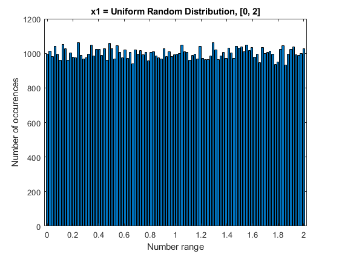 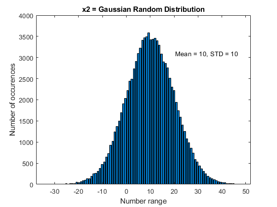 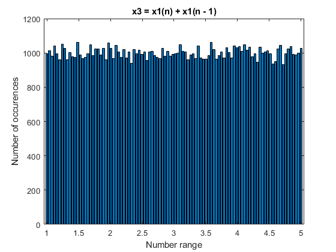 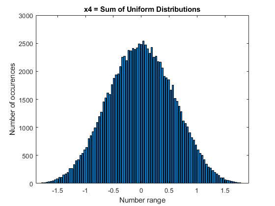
2.3
clear x1 x2 x3 x4
figure();
n = -10:20;
x = transpose((sin(0.1*pi*n) .* (unit(n, 0) - unit(n, 10)))) * ones(1, 4);
stem(-10:113, x(:), 'filled');
xlabel("Index"); ylabel("Value"); title("Four Periods");
figure();
y1 = reshape([1; 2; 3] * ones(1, 8), [24, 1]);
y2 = reshape([1; 2; 3; 4] * ones(1, 6), [24, 1]);
x4 = [y1;1] + [y2;1];
stem(0:24, x4, 'filled');
xlabel("Index"); ylabel("Value"); title("Periodic Addition");
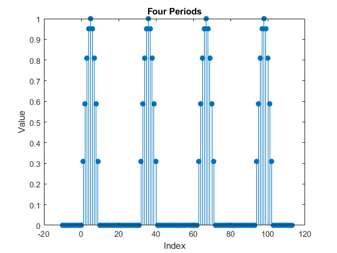 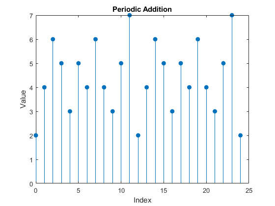
2.5
clear n y1 y2 x3 x4
figure();
n = -100:100; z = exp(0.1*pi*n*1i);
subplot(2, 1, 1); stem(n, real(z), 'filled');
title("Real Part of $$z$$", "interpreter", "latex");
xlabel("Index"); ylabel("Value");
subplot(2, 1, 2); stem(n, imag(z), 'filled');
title("Imaginary Part of $$z$$", "interpreter", "latex");
xlabel("Index"); ylabel("Value");
figure();
n = -20:20; z = cos(0.1*n);
stem(n, z, 'filled');
xlabel("Index"); ylabel("Value"); title("Plot of $$\cos(0.1n)$$", "interpreter", "latex");
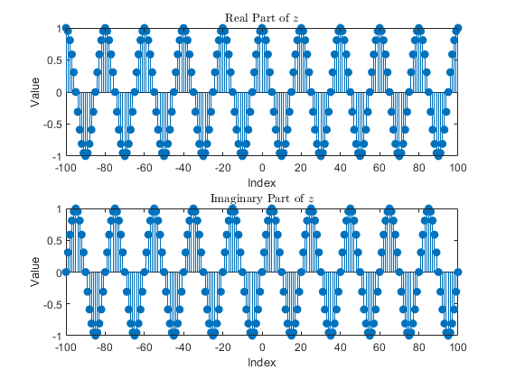 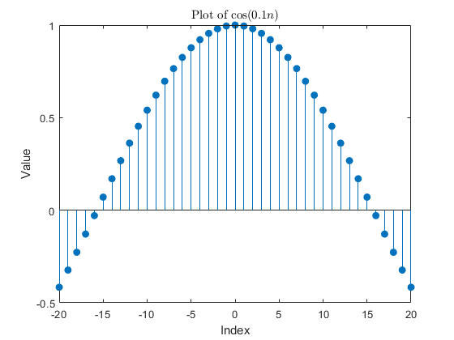
2.6
clear n y z
figure();
n = -20:20; x = cos(0.2*pi*n + pi/4);
[xe, xo, m] = evenodd(x, n);
subplot(3, 1, 1); stem(n, x, 'filled');
title("Original"); xlabel("Index"); ylabel("Value");
subplot(3, 1, 2); stem(m, xe, 'filled');
title("Even Part"); xlabel("Index"); ylabel("Value");
subplot(3, 1, 3); stem(m, xo, 'filled');
title("Odd Part"); xlabel("Index"); ylabel("Value");
figure();
n = 0:100; x = exp(-0.05*n).*sin(0.1*pi*n + pi/3);
[xe, xo, m] = evenodd(x, n);
subplot(3, 1, 1); stem(n, x, 'filled');
title("Original"); xlabel("Index"); ylabel("Value");
subplot(3, 1, 2); stem(m, xe, 'filled');
title("Even Part"); xlabel("Index"); ylabel("Value");
subplot(3, 1, 3); stem(m, xo, 'filled');
title("Odd Part"); xlabel("Index"); ylabel("Value");

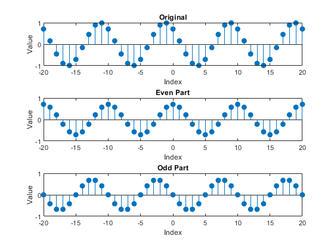 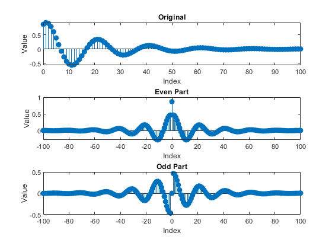
2.10
clear m n x xe xo
n = 0:199; x = cos(0.2*pi*n) + 0.5*cos(0.6*pi*n);
[n_final, y] = signalsum(n, x, [n+50], 0.1*x);
figure();
subplot(3, 1, 1); stem(n, x, 'filled'); axis([0, 250, -2, 2]);
title("$$x(n)$$", "interpreter", "latex");
xlabel("Index"); ylabel("Value");
subplot(3, 1, 2); stem([n+50], 0.1*x, 'filled'); axis([0, 250, -0.2, 0.2]);
title("$$\alpha x(n-k)$$", "interpreter", "latex");
xlabel("Index"); ylabel("Value");
subplot(3, 1, 3); stem(n_final, y, 'filled'); axis([0, 250, -2, 2]);
title("$$y(n) = x(n) + \alpha x(n-k)$$", "interpreter", "latex");
xlabel("Index"); ylabel("Value");
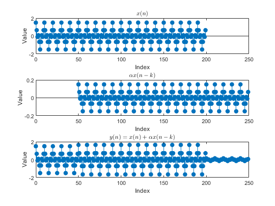